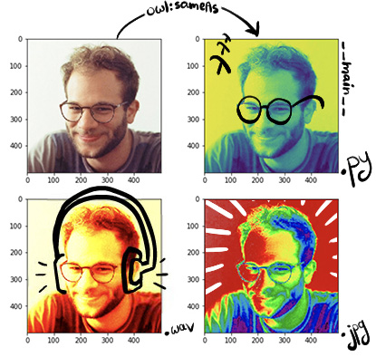

Basel Shbita
multidisciplinary artist, scientist, and engineer from SWANA, based in LA

academic handles
art handles
Basel Shbita (باسل شبيطة; באסל שביטה; Басель Шбита) is a scientist, multidisciplinary artist, and engineer. Based in LA, Basel is currently a Ph.D. candidate in the Computer Science Department at the University of Southern California (USC). Basel serves as a research assistant at the Center on Knowledge Graphs at USC's Information Sciences Institute (ISI) where Prof. Craig Knoblock advises him.
Basel's research focuses on techniques for describing, acquiring, and exploiting data semantics and combining all of these techniques to build knowledge graphs, as a means to solve complex information integration problems. At ISI, Basel is currently partaking in the Linked Maps and Critical-MAAS projects. His past projects include Model Integration (MINT), Table Understanding and the Alexa Prize Socialbot Grand Challenge 4. If you're interested to read more about Basel's academic research work, please visit this page.
Basel has a proven 10+ years of experience in software engineering, programming, and debugging in various languages and has assumed several tech lead roles in the past. Before joining USC, Basel worked for Mellanox Technologies (acquired by Nvidia) between 2011-2017 as a Senior Firmware Engineer and Team Leader in the Switch Silicon Core Department; and for Apple in 2018 as an Embedded Software Engineer in the Flash Storage Software Department. Basel received his B.Sc. degree in Electrical Engineering from Tel Aviv University in 2015.
Besides his research and academic work, Basel practices plastic and visual arts, his art spans across different mediums, including: hand drawing, painting, and AI-driven artworks. You can find Basel's art projects on this page.
Contact at basel921 at gmail dot com or at shbita at usc dot edu.
Selected Publications
Teaching
-
TA (Teaching Assistant) for DSCI 558: Building Knowledge Graphs (Graduate). Fall 2020 @ USC
-
TA (Teaching Assistant) for CSCI 563/INF 558: Building Knowledge Graphs (Graduate). Spring 2020 @ USC
News